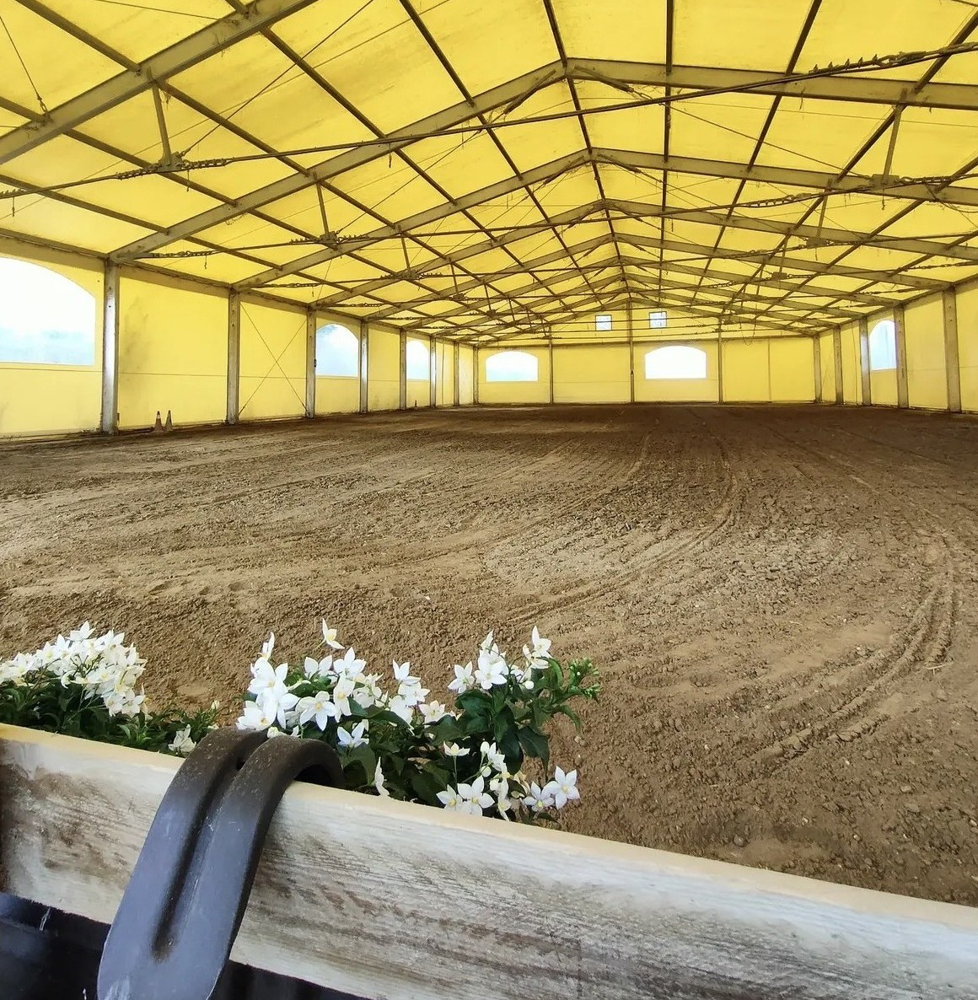
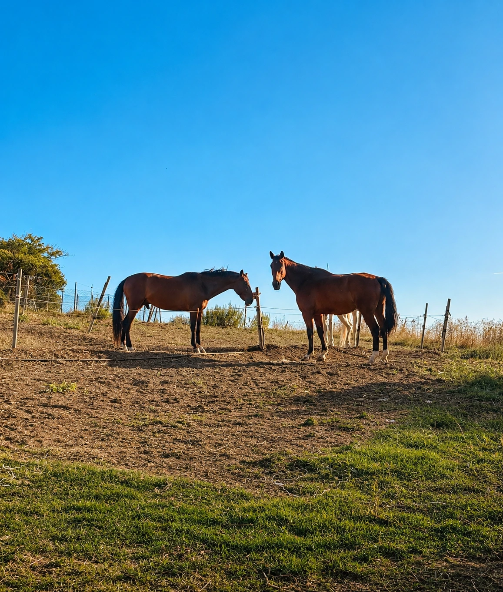
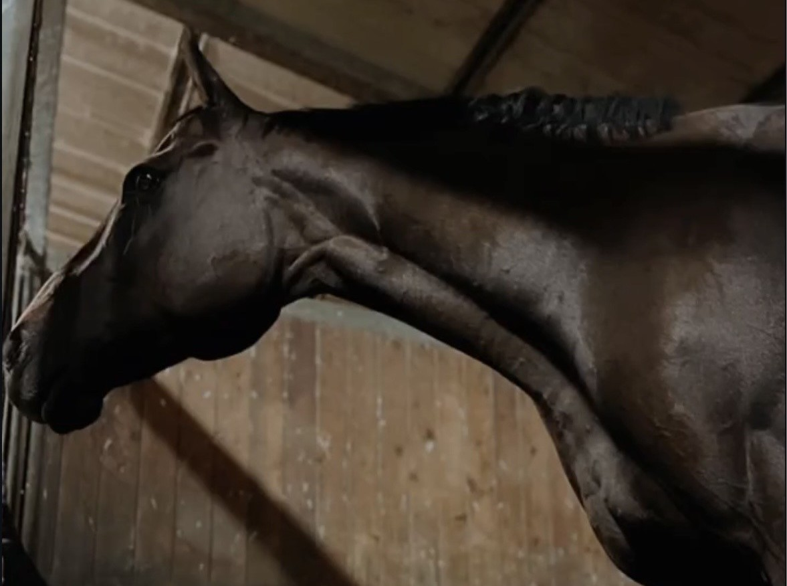
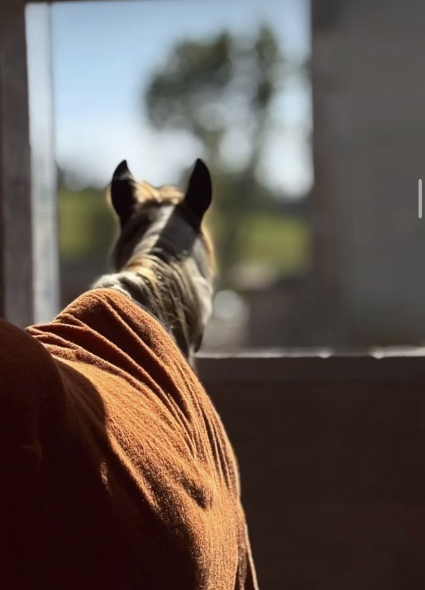
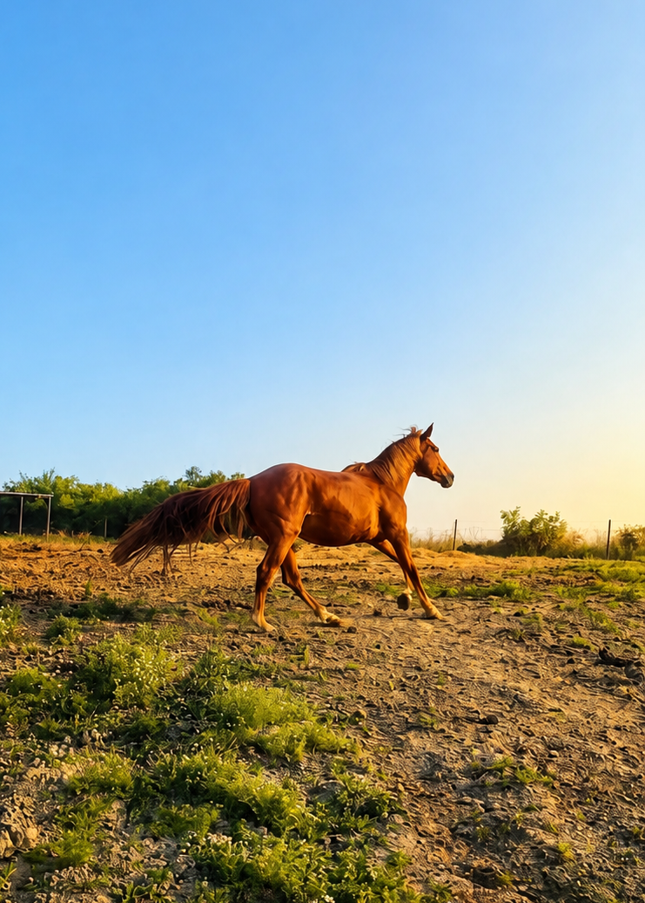
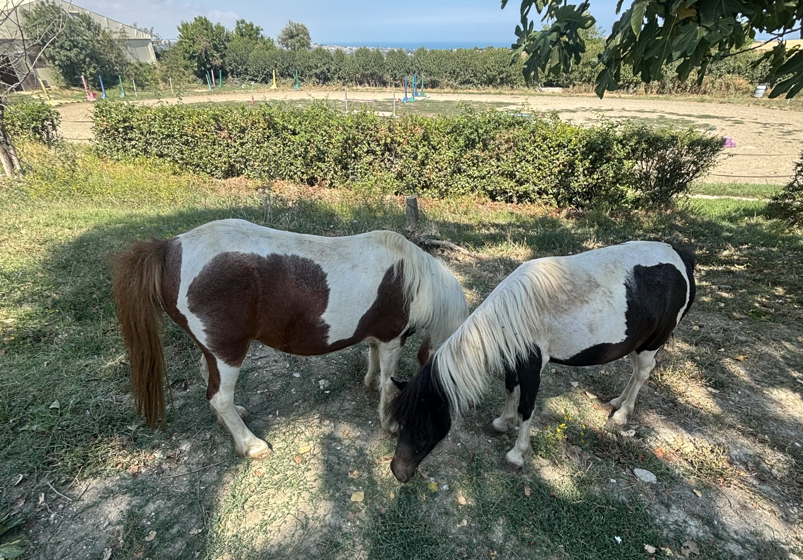

Benvenuti nella nostra pensione!
Offriamo ampi box, paddock immersi nel verde e cure giornaliere dedicate al benessere del tuo compagno. La nostra struttura è pensata per garantire la massima serenità sia al cavaliere che al cavallo, unendo spazi ampi a una gestione professionale.

I Nostri Servizi
- Libertà e Paddock: Spazi verdi dedicati al movimento quotidiano, alla sgambatura e alla socializzazione all'aperto.
- Scuderie e Box: 20 box confortevoli, ben ventilati e igienizzati quotidianamente per assicurare il massimo riposo.
- Cura quotidiana: Alimentazione bilanciata con foraggio e mangimi di alta qualità, unita a una sorveglianza costante sulla salute.
Strutture a disposizione
- Campi di lavoro: Un campo coperto (20x40 m), un campo all'aperto (40x60 m) in sabbia utilizzabili in qualsiasi stagione e un tondino, oltre a diversi paddock dedicati.
- Selleria custodita: Uno spazio sicuro e organizzato per riporre tutta l'attrezzatura personale.
- Comfort e relax: Zone di lavaggio dedicate e un'accogliente Club House (area soci) per rilassarsi prima o dopo l'attività.




